인터넷정보관리사-2급 (2019-06-15 기출문제)
1과목: 인터넷의 이해
1. 다음 중 국제 인터넷 기구만으로 짝지어진 것은?
- APNIC, CERT
- CERT, NIS
- IMR, IRG
- ISOC, IMR
(정답률: 54%)

2. 다음에서 설명하는 IPv6의 특징은 무엇인가?
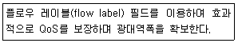
- 확장된 주소 공간
- 향상된 서비스의 지원
- 헤더 포맷의 단순화
- 보안과 개인 보호에 대한 기능
(정답률: 43%)
3. IPv4의 A클래스에 대한 설명으로 잘못된 것은?
- 초대형 네트워크에 사용된다.
- 1과 128로 시작하는 주소는 특수 목적의 IP주소로 사용한다.
- 많은 호스트를 가진 네트워크에 주로 사용한다.
- 기본 넷마스크는 255.0.0.0 이다.
(정답률: 56%)
4. IPv4의 등급을 나타내는 클래스 등급 구간을 바르게 구성한 것은?
- A클래스 ~ E클래스
- A클래스 ~ F클래스
- A클래스 ~ C클래스
- A클래스 ~ D클래스
(정답률: 60%)
5. 다음 중 차상위 도메인 네임과 성격이 잘못 구성된 것은?
- or – 비영리 기관
- re – 연구 기관
- kg – 국방조직 기관
- go – 정부조직 기관
(정답률: 70%)
6. 다음은 IPv6에 대한 설명이다. 괄호 안에 알맞은 용어는 무엇인가?
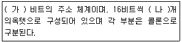
- 가 - 128 나 - 8
- 가 - 128 나 - 16
- 가 - 256 나 - 8
- 가 - 256 나 - 16
(정답률: 69%)
7. 다음 중 소셜미디어의 단점이 아닌 것은?
- 제도적인 통제수단이 적다.
- 중독 가능성이 높다.
- 개인 사생활이 노출될 수 있는 위험이 높다.
- 음란물 여과가 쉽다.
(정답률: 74%)
8. 클라우드 컴퓨팅 관련 기술에 대한 설명으로 잘못된 것은?
- 서비스 프로비저닝은 서비스 제공업체가 실시간으로 자원을 제공한다.
- 전산자원에 대한 과금 체계를 정립하기 위한 기술은 자원 유틸리티이다.
- SaaS를 제공하는데 필수 요소로 꼽히는 기술은 다중 공유모델이다.
- 여러 대의 전산 자원을 반드시 한 대처럼 운영하는 기술은 가상화 기술이다.
(정답률: 61%)
9. 다음 설명에서 괄호 안에 알맞은 용어는 무엇인가?
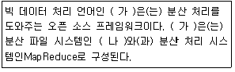
- 가 - Java 나 - HDFS
- 가 - Hadoop 나 - HDFS
- 가 - Hadoop 나 - NTFS
- 가 - Java 나 - NTFS
(정답률: 48%)
10. 불특정 다수를 대상으로 하는 클라우드 컴퓨팅 서비스는 무엇인가?
- 프라이빗 클라우드
- 하이브리드 클라우드
- 모바일 클라우드
- 퍼블릭 클라우드
(정답률: 63%)
11. 클라우드 컴퓨팅의 장점에 대한 설명으로 잘못된것은?
- 초기 구입비용은 많이 소요되나 지출이 적다.
- 언제 어디서든 자신의 작업한 문서 등을 열람할 수 있다.
- 외부 서버에 자료를 안전하게 보관할 수 있다.
- 저장 공간의 제약을 극복할 수 있다.
(정답률: 59%)
12. 클라우드 컴퓨팅의 단점에 대한 설명으로 잘못된것은?
- 개별 정보의 물리적 위치 파악이 어렵다.
- 통신 환경이 열악하면 서비스 받기 힘들 수 있다.
- 서버가 공격당해도 개인 정보를 보호할 수 있다.
- 재해로 서버 데이터가 손상되면 백업하지 않은 정보는 복구하지 못할 수 있다.
(정답률: 85%)
13. 다음은 NFC에 대한 설명이다. 괄호 안에 적합한 값과 내용은 무엇인가?
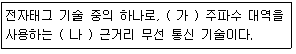
- 가 - 13.56MHz 나 - 접촉식
- 가 - 13.56GHz 나 - 접촉식
- 가 - 13.56MHz 나 - 비접촉식
- 가 - 13.56GHz 나 – 비접촉식
(정답률: 57%)
14. 추측이나 루머와 같이 부정확하고 잘못된 정보의 확산으로 치명적인 위기를 초래하는 것을 의미하는 용어는 무엇인가?
- 인포데믹스(Infodemics)
- 네카시즘(Netcarthism)
- 인포러스트(Infolust)
- 스턱스넷(Stuxnet)
(정답률: 54%)
15. 실세계에 3차원 가상물체를 겹쳐서 보여주는 기술은 무엇인가?
- 증강현실
- 가상현실
- 스마트 그리드
- 엔스크린
(정답률: 77%)
16. 모든 인증이 하나의 시스템에서 이루어지는 통합 인증 방식을 의미하는 용어는 무엇인가?
- One Sign On(OSO)
- Multi Sign On(MSO)
- Single Sign On(SSO)
- Hipass Sign On(HSO)
(정답률: 52%)
17. 인터넷을 기반으로 모든 사물을 연결하는 지능형 기술을 의미하는 용어는 무엇인가?
- Cloud
- Big Data
- AI
- IoT
(정답률: 67%)
18. 저작권의 기술적 보호 방법 중 적극적 보호 기술에 해당하지 않는 것은?
- 암호화 기술
- DRM
- 디지털 워터마킹
- 접근 제어
(정답률: 52%)
19. 저작권법에서 저작인격권에 해당하지 않는 것은?
- 공표권
- 배포권
- 성명표시권
- 동일성유지권
(정답률: 43%)
20. 저작권법에서 저작재산권에 해당하지 않는 것은?
- 복제권
- 공연권
- 공표권
- 전시권
(정답률: 43%)
21. 저작권법에서 보호받는 저작물이 아닌 것은?
- 법원의 판결
- 백과사전
- 번역
- 컴퓨터 프로그램
(정답률: 71%)
22. 저작권법에서 저작권에 이웃하는 권리로 실연자, 음반제작자, 방송사업자 등의 권리는 무엇인가?
- 저작재산권
- 저작인접권
- 공중송신권
- 2차저작물작성권
(정답률: 47%)
23. 저작권의 기술적 보호 방법 중 이미지 및 오디오 파일에 중요한 파일이나 메시지를 숨겨 전송하는 기법은 무엇인가?
- 디지털 워터마킹
- 스테가노그라피
- 스마트 그리드
- 데이터 마이닝
(정답률: 44%)
24. 다음 중 스크립트 언어가 아닌 것은?
- JSP
- PHP
- ASP
- C++
(정답률: 51%)
25. 다음 중 전자금융 거래 시마다 새로운 비밀번호를 사용함으로써 비밀번호 유출로 인한 사고를 방지하기 위한 보안 수단은 무엇인가?
- OTP
- SOHO
- P2P
- ISP
(정답률: 78%)
26. 다음 중 그래픽 기반의 HTML 저작 도구가 아닌 것은?
- 핫도그
- 나모 웹 에디터
- 플래시
- 드림위버
(정답률: 62%)
27. HTML 태그 중 하이퍼링크를 구성하기 위한 태그는?
- ＜A＞
- ＜P＞
- ＜link＞
- ＜tr＞
(정답률: 40%)
28. 다음 중 폼(FORM) 관련 태그가 아닌 것은?
- ＜FORM＞
- ＜INPUT＞
- ＜SELECT＞
- ＜LI＞
(정답률: 63%)
29. HTML 태그의 특징에 대한 설명으로 잘못된것은?
- 속성과 속성의 구분은 공백으로 구분한다.
- 확장자로 htm, html을 사용한다.
- 모든 태그는 시작 태그와 닫기 태그로 구성된다.
- 태그는 대소문자를 구분하지 않는다.
(정답률: 40%)
30. 다음 중 비디오 파일 형식이 아닌 것은?
- AVI
- RAM
- DVI
- ASF
(정답률: 79%)
31. 신문, TV, 인터넷 등의 다양한 매체를 이해하고, 분석 및 활용할 수 있는 능력은 무엇인가?
- DRM
- 디지털 워터마킹
- 미디어 리터러시
- 하이퍼미디어
(정답률: 65%)
32. 3차원 물체의 각 면에 색깔이나 음영 효과를 넣어 화상의 입체감과 사실감을 나태내는 용어는?
- 메조틴트
- 렌더링
- 디더링
- 모델링
(정답률: 54%)
33. 교과과정과 소프트웨어의 합성어로 시스템과 학생과의 상호 대화식 방법의 멀티미디어를 이용한 교육용 소프트웨어는 무엇인가?
- 가상현실
- 증강현실
- 코스웨어
- 키오스크
(정답률: 60%)
2과목: 인터넷 자원 탐색
34. 그림은 웹 브라우저의 아이콘이다. 이 브라우저에 대한 설명으로 옳은 것은?
- 애플이 개발한 웹 브라우저이다.
- 원래 리눅스용으로 개발하였다.
- 구글의 오픈소스 웹 브라우저이다.
- 첼로 브라우저의 상업용 버전이다.
(정답률: 57%)
35. 다음 설명에 해당하는 웹 브라우저 적용 기술은?
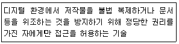
- CCD
- CSS
- DRM
- Adblock
(정답률: 55%)
36. 구글 크롬에서 특정 사이트의 쿠키만 삭제하고자 할 때 활용하는 메뉴는?
- 타사 쿠키 차단
- 모든 쿠키 및 사이트 데이터 보기
- 브라우저를 종료할 때까지만 로컬 데이터 유지
- 사이트에서 쿠키 데이터를 저장하고 읽도록 허용(권장)
(정답률: 57%)
37. 크롬 브라우저에서 '동기화를 사용 설정' 시 동기화 대상을 고른 것은?
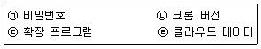
- ㉠, ㉡
- ㉠, ㉢
- ㉡, ㉢
- ㉢, ㉣
(정답률: 38%)
38. 다음 설명에 해당하는 크롬 브라우저의 도구는?
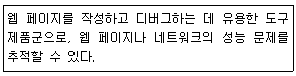
- 개발자 도구
- 작업 관리자
- 확장 프로그램
- 인터넷 사용 기록 삭제
(정답률: 51%)
39. 크롬 브라우저의 '북마크 및 설정 가져오기'에서 'Microsoft Edge'를 선택 시 가져올 수있는 항목은?
- 검색 엔진
- 저장된 비밀번호
- 즐겨찾기/북마크
- 인터넷 사용기록
(정답률: 60%)
40. '개발자 도구'를 실행하기 위한 익스플로러와 크롬의 단축키가 옳게 연결된 것은?
- 익스플로러 : F10, 크롬 : F11
- 익스플로러 : F12, 크롬 : F11
- 익스플로러 : F11, 크롬 : F12
- 익스플로러 : F12, 크롬 : F12
(정답률: 44%)
41. Firefox 환경 설정에서 '개인 정보 및 보안' 메뉴에서 설정할 수 있는 항목은?
- Firefox 계정을 생성하거나 관리
- Firefox를 기본 브라우저로 설정
- 콘텐츠 차단 및 비밀번호 관리 방식을 설정
- Firefox 업데이트 기록 확인 및 설정 변경
(정답률: 52%)
42. Firefox 기능 중 이미 만들어져 있는 웹을 사용자가 임의대로 편집할 수 있는 기능은?
- IE-Tab
- Web Developer
- Video Downloader
- Greasemonkey
(정답률: 40%)
43. 크롬 브라우저의 '고급' 메뉴에서 설정할 수있는 기능은?
- 검색엔진
- 다운로드
- 자동 완성
- 기본 브라우저
(정답률: 24%)
44. 크롬 브라우저에서 홈 버튼의 표시 여부를 설정하는 메뉴는?
- 모양
- 언어
- 사용자
- 시작 그룹
(정답률: 46%)
45. 익스플로러에서 '다음 페이지로 이동' 하기위한 단축키는?
- F7
- Alt + 왼쪽 화살표
- Alt + 오른쪽 화살표
- F11
(정답률: 71%)
46. 에이전트 인덱스 방식에 대한 올바른 설명을 고른 것은?
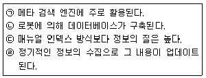
- ㉠, ㉡
- ㉡, ㉢
- ㉡, ㉣
- ㉢, ㉣
(정답률: 38%)
47. 다음 설명에 해당하는 키워드 배치 전략은?
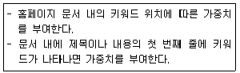
- 키워드 돌출
- 키워드 연관
- 키워드 무게
- 사이트 링크 순위
(정답률: 48%)
48. 키워드 연관 전략에 관한 설명 중 괄호 안에 들어갈 용어로 가장 옳은 것은?
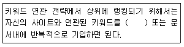
- CSS
- HTML
- META
- Keyword
(정답률: 45%)
49. 다음 설명이 해당하는 정보 검색 관련 상식은?
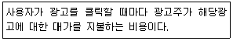
- CPC
- SEO
- 옐로우 페이지
- 링크 우선순위
(정답률: 49%)
50. 다음 사례에서 재현율은?(오류 신고가 접수된 문제입니다. 반드시 정답과 해설을 확인하시기 바랍니다.)
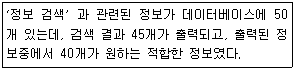
- 32%
- 40%
- 50%
- 80%
(정답률: 70%)
51. 다음 설명에 해당하는 검색 결과 제공 방식은?
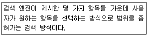
- 디렉토리 검색
- 카테고리 검색
- 지식 검색
- 사이트 검색
(정답률: 62%)
52. 다음 제시된 역할을 수행하는 사람들을 지칭하는 용어는?
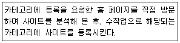
- 유저
- 웹서퍼
- 헬퍼
- 프로그래머
(정답률: 56%)
53. 네이버의 '상세검색'메뉴에 해당하는 것을 고른 것은?
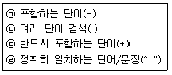
- ㉠, ㉡
- ㉠, ㉣
- ㉡, ㉢
- ㉢, ㉣
(정답률: 41%)
54. 다음 설명에 해당하는 가장 적합한 네이버 서비스는?
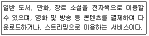
- 웹툰
- 시리즈
- 통합검색
- 스마트 플레이스
(정답률: 48%)
55. 다음(Daum)에서 '기부금 모금' 과 관련된 서비스는?
- 카카오스토리
- 카카오같이가치
- 카카오메이커스
- 카카오함께가치
(정답률: 51%)
56. 다음 사례에 가장 적합한 네이버의 모바일 앱은?
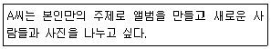
- V앱
- 밴드앱
- 뮤직앱
- 폴라앱
(정답률: 36%)
57. 다음과 같은 검색 엔진은?
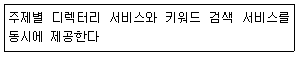
- 로봇 검색 엔진
- 하이브리드 검색 엔진
- 주제별 검색 엔진
- 메타 검색 엔진
(정답률: 56%)
58. 다음 설명에 해당하는 검색 형식을 고른 것은?
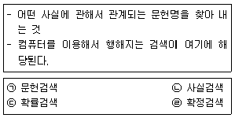
- ㉠, ㉡
- ㉠, ㉢
- ㉡, ㉣
- ㉢, ㉣
(정답률: 34%)
59. 그림은 정보 검색과 관련한 프로세스이다. (가)에 들어갈 용어로 가장 적절한 것은?
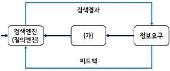
- 로봇
- 탐색
- 질의
- 데이터베이스
(정답률: 25%)
60. 2차 정보원의 사실정보원과 서지정보원을 옳게 연결한 것은?
- 사실정보원 : 연감, 서지정보원 : 특허정보
- 사실정보원 : 편람, 서지정보원 : 초록집
- 사실정보원 : 단행본, 서지정보원 : 데이터베이스
- 사실정보원 : 색인지, 서지정보원 : 명감
(정답률: 40%)
61. 정보원으로 데이터베이스를 선정할 때의 '수록 범위'에 해당하는 평가요소를 고른 것은?
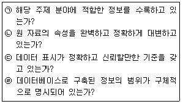
- ㉠, ㉡
- ㉢, ㉣
- ㉡, ㉢
- ㉠, ㉣
(정답률: 46%)
62. 다음 사례에서 A씨에게 적합한 인터넷 정보원은?
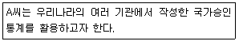
- KREN
- NDSL
- RISS
- KOSIS
(정답률: 53%)
63. 다음 설명에 해당하는 검색 옵션은?
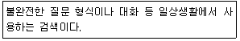
- 구문 검색
- 필드 검색
- 자연어 검색
- 결과내 재검색
(정답률: 57%)
64. 인터넷 정보원 활용 방법으로 가장 적절한 것은?
- 검색 엔진의 변화는 첫 활용 시에만 검토한다.
- 전문 DB의 검색 대상을 정확히 파악해야 한다.
- 검색 결과를 보여주는 방법은 검색 엔진에 따른다.
- 검색 PC의 사양에 따라 적합한 검색 엔진을 선택해야 한다.
(정답률: 47%)
65. 다음 설명에 해당하지 않는 인터넷 정보원은?
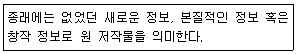
- 해설 요약
- 학술 잡지
- 학위 논문
- 회의 자료
(정답률: 38%)
66. DOI 시스템의 기능에 대한 설명으로 옳은 것을 고른 것은?
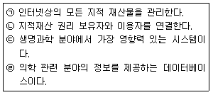
- ㉠, ㉡
- ㉠, ㉣
- ㉡, ㉢
- ㉢, ㉣
(정답률: 33%)
3과목: 인터넷 윤리
67. 다음 뉴스에서 다루고 있는 사례와 관련된 인터넷 용어는?
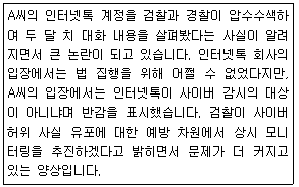
- 판옵티콘(Panopticon)
- 시놉티콘(Synopticon)
- 옵트 아웃(opt-out)
- 게이트키핑(Gatekeeping)
(정답률: 36%)
68. 다음 중 버지니아 셰어(Virginia Shea)가 제시한 네티켓 핵심 원칙과 가장 거리가 먼 것은?
- 인간임을 기억하라.
- 다른 사람의 실수를 지적하여 인정하게 하라.
- 온라인상의 자신을 근사하게 만들어라.
- 전문적인 지식을 공유하라.
(정답률: 60%)
69. 다음 중 이메일 네티켓에 대한 설명으로 잘못된것은?
- 매일 이메일을 체크하고 중요하지 않은 것은 즉시 지운다.
- 내용을 알 수 있는 함축된 제목을 붙인다.
- 이메일 보내기 전 주소가 올바른지 확인하고, 본인이 누구인지 밝힌다.
- 자신의 ID나 비밀번호를 타인에게 공개한다.
(정답률: 69%)
70. 다음 중 방송통신심의위원회에서 제시한 네티즌 행동 강령이 아닌 것은?
- 우리는 실명이나 가명으로 활동한다.
- 우리는 타인의 정보를 보호하며, 자신의 정보도 철저히 관리한다.
- 우리는 타인의 지적재산권을 보호하고 존중 한다.
- 우리는 사이버 공간에 대한 자율적 감시와 비판활동에 적극 참여한다.
(정답률: 44%)
71. 다음 중 사이버 명예 훼손에 대한 설명으로 틀린 것은?
- 명예 훼손죄는 '친고죄'이다.
- 명예 훼손죄는 '반의사불벌죄'이다.
- 다른 사람의 명예를 훼손한 경우라도 그 내용이 진실하고 공익적이라면 처벌하지 않기도 한다.
- 정보통신망 이용촉진 및 정보보호등에 관한 법률 제66조에 따라 처벌 된다.
(정답률: 24%)
72. 다음 중 사실 파악이 되지 않은 상태에서 무차별적으로 개인의 사생활을 폭로하고 익명으로 비방하는 온라인 폭력으로, 일명 마녀사냥이라고 일컬어지는 것은?
- 네카시즘
- 인포데믹스
- 사이버 스토킹
- 사이버 명예훼손
(정답률: 48%)
73. 다음 중 사이버 테러형 범죄에 해당되는 것은?
- 불법 복제
- 사이버 명예 훼손
- 인터넷 사기
- 악성 프로그램 유포
(정답률: 61%)
74. 다음 중 개인 정보를 보호할 수 있는 방법이 아닌 것은?
- 모든 사이트의 아이디를 같은 것으로 한다.
- 개인 정보 입력 시 자동 완성 기능을 사용하지 않는다.
- 탈퇴 절차에 대한 설명이 없는 곳은 가입하지 않는다.
- 인터넷 회원 가입 시 서비스 약관에 제3자에게 정보를 제공할 수 있다는 조항이 있는 지 확인한다.
(정답률: 65%)
75. 다음 괄호 안에 들어갈 내용으로 가장 알맞은 것은?
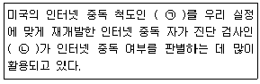
- ㉠-US척도, ㉡-K척도
- ㉠-US척도, ㉡-Young척도
- ㉠-Young척도, ㉡-K척도
- ㉠-Young척도, ㉡-US척도
(정답률: 52%)
76. 다음 인터넷 중독의 증상 중 내성으로 인한 것은?
- 인터넷을 하지 않으면 불안해진다.
- 대부분의 시간을 인터넷을 하는 데 보낸다.
- 인터넷을 하지 않는 동안에도 인터넷을 할 생각만 한다.
- 만족하기 위해서 점점 더 많은 시간을 인터넷 사용으로 보낸다.
(정답률: 51%)
77. 다음 괄호에 들어갈 인터넷 중독(중증) 치료과정을 순서대로 나열한 것은?
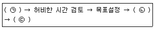
- ㉠-현상파악, ㉡-상황파악, ㉢-협조의뢰
- ㉠-상황파악, ㉡-현상파악, ㉢-협조의뢰
- ㉠-상황파악, ㉡-협조의뢰, ㉢-현상파악
- ㉠-협조의뢰, ㉡-현상파악, ㉢-상황파악
(정답률: 37%)
78. 한국형 인터넷 중독 자가 진단 프로그램인 K-척도로 분류할 때, 일반사용자군에 해당하는 중·고등학생이 하루 인터넷에 접속하는 시간은?
- 약 1시간
- 약 2시간
- 약 4시간
- 약 6시간
(정답률: 51%)
79. 다음 중 인터넷 게임 중독을 예방하기 위한 방법으로 옳지 않은 것은?
- 인터넷 게임 사용일지를 작성한다.
- 해야 할 일을 먼저 하고 게임을 한다.
- 온라인 게임 외에 다양한 대안 활동을 모색 한다.
- 게임시간 조절이 어려울수록 혼자 이겨내 보도록 노력한다.
(정답률: 65%)
80. 다음 중 전문 인터넷 중독 예방 상담 기관은?
- 아이윌센터
- 공정거래위원회
- 한국콘텐츠진흥원
- 정보통신산업진흥원
(정답률: 52%)